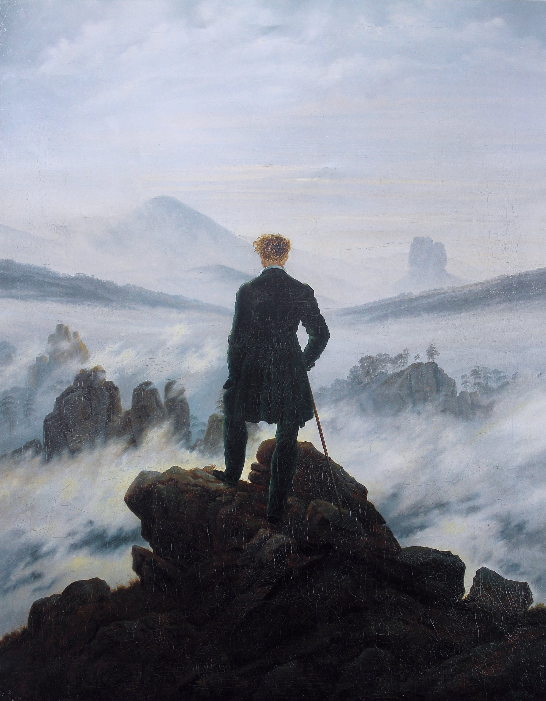

A figure seen only from behind. A sea of fog. A few rock peaks breaking the surface. No face, no plot — yet this 200-year-old painting is one of the most reposted "meaning" images on the internet today. Anyone who has ever stood on some summit of their life, staring into an unknown ahead, finds themselves in this fog.
Rückenfigur: the figure faces away, placed near the visual center-left, carrying all the compositional weight while showing no expression. He isn't someone you watch looking at a view — he's a stand-in for you, looking through him.
Three depth layers: jagged rock in the foreground (dark, sharp, detailed) → fog-wrapped peaks in the middle ground (progressively softer, cooler, lighter) → the farthest ridge nearly dissolving into sky. Each layer pulls the flat canvas into depth.
Low horizon, tall proportions: the figure's head reaches barely a third of the way up the canvas, letting sky and fog claim most of the frame — the classic formula for the Sublime: a small figure set against the vast and unknowable.
Friedrich skips linear, vanishing-point perspective and uses aerial perspective instead: the near rocks are saturated, warm olive-green and ochre; distance cools and desaturates the palette step by step, until it dissolves into blue-gray fog. Distance isn't drawn with lines — it's painted with temperature. It's one of the simplest and most effective depth illusions in all of color theory.
There is no visible sun. The light source is the fog itself — diffuse, directionless, cool — casting the whole scene in a mood somewhere between dawn and overcast. The figure is a pure silhouette, backlit against the pale fog: all detail withheld, leaving only outline — turning a man into a symbol rather than a specific person.
Technically, this is German Romantic glazing: layer upon layer of thin paint, brushwork nearly invisible, depth built through subtle tonal shift rather than visible gesture — the opposite path from Van Gogh's urgent, visible stroke, even though both painters loved fog and night.
The painting's real power is its ambiguity: is this back a conqueror who has mastered nature, or an ordinary person rendered speechless and small before it? Friedrich never answers — he hands the entire interpretation to the viewer. That's exactly why, two centuries later, it still gets printed on self-help book covers as "facing the unknown," and cited in essays on solitude and existential vertigo.
A man with no face lets the whole world see itself in him — possibly the highest form of empathic design a painting can achieve.
Caspar David Friedrich (1774–1840) was the most important landscape painter of German Romanticism, working most of his life in Dresden. He lifted landscape painting from mere recording of nature into spiritual contemplation — ruined churches, crosses, fog, and moonlight recur throughout his work, treating nature itself as a vessel for religious experience.
Some scholars believe the back-turned figure may be a self-portrait (the red hair matches). He died in near-obscurity and poverty, forgotten until rediscovered in the early 20th century — now regarded as the definitive voice of the Romantic spirit.